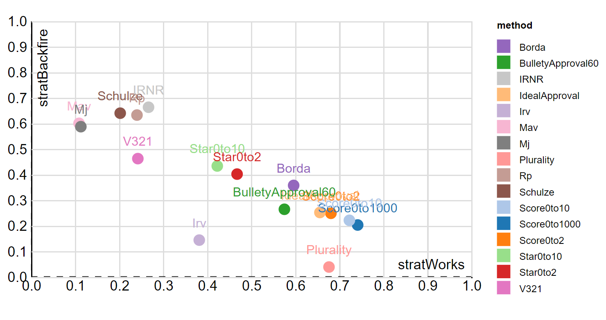

I’d like to describe on this page how Condorcet voting methods can help us find a common ground candidate and elect them.
I’ll go into detail to explain the hard-to-understand parts of Condorcet methods. For that mental effort, you’ll get the benefit of not needing to think about the polls to decide who to vote for but simply be able to vote for the candidates in the order you like. And you’ll have better candidates to vote for.
Intro to Condorcet
To summarize, the key mechanism that allows this method to work so well is that your support goes 100% to the candidate you like better out of every pair of candidates. This is a lot better than just choosing one candidate: there’s no spoiler effect and there’s no vote splitting. This is a tremendous burden off of the voters and the candidates.
Pairwise Ranked Ballot
We’re going to use that background map for ballot visualization in the two elections below. We’ll overlay the ballots for all the voters to try to make it more clear how everybody’s ballots get added together.
FPTP Spoilers, Condorcet None
Switch between FTPTP and Condorcet
Condorcet: No Vote Splitting
Switch between FTPTP and Condorcet
How does this work? We have this information about each pair of candidates, so the obvious thing to do is check if there is a winner that won all of their matches, which is called the Condorcet winner. If you ever hear somebody talking about counting by pairs or Condorcet methods, well, they’re pretty much the same thing.
The name Condorcet comes from the guy that thought it up, the Marquis de Condorcet, whose actual name is Nicholas Caritat and who is actually just from the town of Condorcet, so really it gets its name from a town in France. And actually, it maybe should be called Llull because Ramon Llull thought it up 500 years before Condorcet.
Statues of Concorcet and Llull


Also, when there is a Condorcet winner, Arrow’s Impossibility Theorem does not apply. So I would say this is the perfect voting system.
Visualizing Cycles
There’s only one hard to understand part about Condorcet methods, and that is what to do when there is a kind of a tie called a Condorcet cycle, which means there is no Condorcet winner. You already know this. It’s a rock-paper-scissors cycle. It’s like a tie because each candidate got one win, so there’s a tie in the number of wins.
Rock Paper Scissors.
Rock beats scissors, and scissors beats paper, but paper beats rock, so it’s a tie, or a cycle.
This visualization above is a little crowded. The colors here are the same is in the case of the single ballot. The three voter’s ballot diagrams are overlapping in this combined diagram.
Lets clean up the visual by showing a map of where a candidate can beat an opponent.
Beat Map of Rock Paper Scissors
This map shows that scissors is in rock's territory, but paper is outside, so paper beats rock. Wiggle rock to see it's territory move.
This cycle can happen when there is division between three deeply divided groups. It goes away if we add voters to the middle. (Also, let’s use odd numbers so we don’t have to deal with ties.)
Middle Voters Break the Cycle
The middle voters' choice determines who wins because the rest of the voters can’t agree.
Or if we add one candidate to the middle, then they win.
Common ground Candidate Breaks Cycle
A common ground candidate enters the race and wins all their matches.
There is tremendous competitive pressure to go towards the middle as you can see in this new diagram, a win map. The solid yellow region is where B needs to be in order to win.
Win Map
This is a map of where B would have to go to win. Move B around.
This map is much fuller when there are voters in the center. (Also, the striped region in the below diagram is just a regular tie, not a cycle, like the above diagram with thinner striping.)
Win Map with Middle
Middle voters make it easy for common ground candidates to win. Move B around.
Let’s go back to the beat maps. They show where any candidate would need to go to beat B in a one-on-one. It looks like B has most locations locked down except for a white angular area in the center.
Beat Maps
B beats any candidate in the yellow region. Move everybody to see how their beat maps change.
Also, just to make a pretty picture, you can see that if the two middle voters are exactly in the middle, then the regions where the cycle happens become very thin.
Thin Beat Maps
In an election, there are many more voters (the dots below), and B’s beat map is a circle (close to it).
B's Election Beat Map
Only candidates more near the middle can win. Move A, C, and D to make them win.
Let’s look at all the candidate’s beat maps to show that there is a cycle between A, C, and D, but B beats them all. Also, the white spot in the middle is where a new candidate could win.
All Beat Maps in Election
The spot in the middle is where a new candidate can win.
These examples are made to show particular concepts, and a real election would have a wider spread of voters and candidates.
In the voting systems to follow, I added the beat maps to try to make voting more visually understandable.
I’d also like to point out that, in a case where you have to resolve a tie, really any of the candidates would be an okay choice. The differences between Condorcet methods are just in how they go about doing a tiebreaker.
Specific Condorcet Methods
A variety of voting methods will pick the Condorcet winner if it exists. I’m just going to go through a couple different methods: Minimax, Schulze, an alternative way to count Schulze, and Ranked Pairs. I think Minimax is the simplest, so let’s start there.
Minimax
Minimax is a Condorcet method. That means if there’s a guy that beats everyone head to head, then that guy wins. That’s easy. It’s a clear winner. Sometimes there isn’t a clear winner. Then you go through some rules. If you’re just finding one winner, then the rules are pretty simple. You want to find who lost by the least, basically. So just start crossing off all the smallest losses until there is that guy that has no losses. Try it out below.
Minimax
Schulze
Schulze breaks ties in a way that aligns with the intent of a Condorcet winner; Schulze takes all the pairs of candidates and strings the pairs together into chains. At the beginning of the chain is the winner and at the end the loser. The strength of a chain is only as strong as its weakest link. There are many chains between any pair of candidates. The strongest chain is found for each pair. Magically, there is only one candidate who goes undefeated. This is a really cool way to break ties. Try it out below.
There’s an excellent website that Rob LeGrand created that counts ballots using many more Condorcet methods than I have programmed so far on this site, so I have included his code directly into this site. You can see the explanations are a little bit different in formatting.
Schulze
Schulze Alternative
Here’s an alternative way to count Schulze that is a lot like Minimax, but with an extra rule. Also, I may have the implementation incorrect, but it seems to work. Again, this Schulze Alternative breaks ties in a way that aligns with the intent of a Condorcet winner; there’s a tie, so it sees who is tied, and just picks from that group. The candidates with the least losses are automatically in that group, and also we add in anybody that beat them (and anybody that beats anybody we add). Then we have a group that beats everyone, and we pick from that group. After that, it’s just minimax. Resolve the tie by making the smallest change you can; remove the smallest tie. And keep making that Condorcet group each step (this is called the Schwartz set if you want to tell your friends). Try it out below.
Schulze Alternative
Ranked Pairs
Ranked pairs is a lot like Minimax. If there’s a clear winner that beats everyone head-to-head, then they are the winner. If there isn’t a clear winner, then we follow some rules. If you’re just interested in the #1 winner and not #2, then the rules are pretty simple. You want to find who won by the most, basically. So start crossing off candidates that lost by a lot. Unless they are the last one left and the guy they lost to already had a bigger loss. Also, you can just stop once you figure out who the winner is. You don’t have to go through the whole list. Try it out below.
Ranked Pairs
Even More Condorcet Methods
Rob LeGrand’s site has a lot more voting methods, so try them out in the simulation below. The explanations in the sidebar are very thorough and explain the way in which the winner was selected. One detail is that he uses a tie-breaking ballot whenever he runs into a regular tie (not a cycle)
More Methods
Rob LeGrand did a lot of work to include all these Condorcet methods, and some that aren't.
Strategy
In each of these Condorcet methods, voters would have a hard time trying to use a strategy. What I mean by strategy is that you might say you like someone less than you actually do. Like you might put a viable competitor low on your ballot below people you actually don’t like as much in the hope that the tiebreaker would work in your favor. However, these strategies are hard to think about because they can backfire.
Backfiring - Jameson Quinn’s study of how often strategies backfire versus work. The Condorcet methods Schulze and Ranked Pairs (Rp) have a high likelihood of backfiring and a small likelihood of working.

Pair counts are never affected by strategy. It’s only in a cycle-breaker that voters would even think about using strategy, because cycle-breakers don’t use just plain pair counts. In a Condorcet cycle, candidates are virtually in a tie, so candidates will always feel a pressure to move toward the middle, and there will always be a spot in the middle for a new common ground candidate to enter the race.
Afterward
You may have noticed the above examples seem to all be ties, so what does it matter which condorcet method we choose? They all seem to be about the same. As long as we pick one, we’ll be okay.
The benefit of Condorcet methods is that voters don’t split the vote and candidates don’t need to fight each other to avoid splitting the vote. By using a Condorcet method, we end up finding common ground.
Links
Jameson Quinn’s VSE Study on Strategies.
Sandbox Notes
In the sandbox mode below, you can find the visualizations under the “viz” menu and Rob LeGrand’s methods under the “RBVote” option for voting system.
SANDBOX MODE! (link to just this)
From Nicky Case: One hope for Sandbox Mode is that readers can debate with me and each other using this tool! Not just telling me I'm wrong, but showing me I'm wrong. Granted, this tool is very limited – it doesn't handle strategic voting or imperfect information – but I think it's a start, and may help improve our Democratic Discourse™
From Paretoman: if you'd like your own models included here, save it, copy the saved link, and tweet it with the hashtag #smartvotesim.